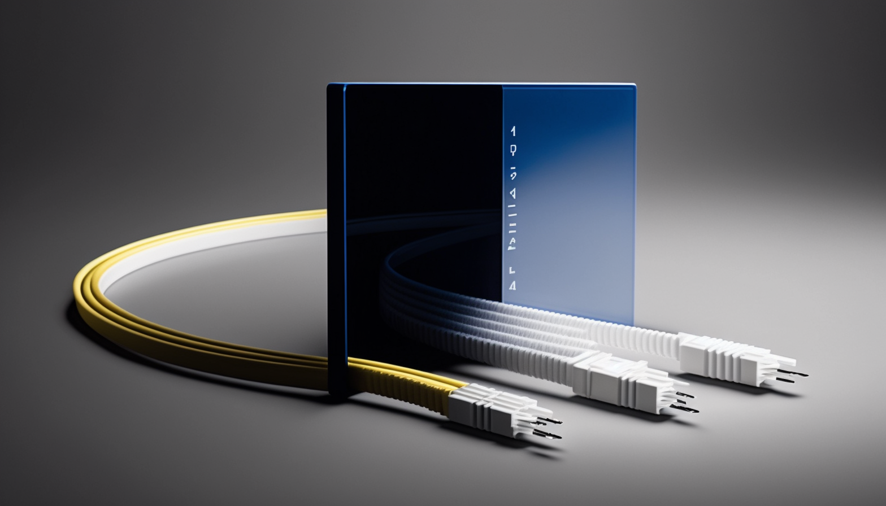
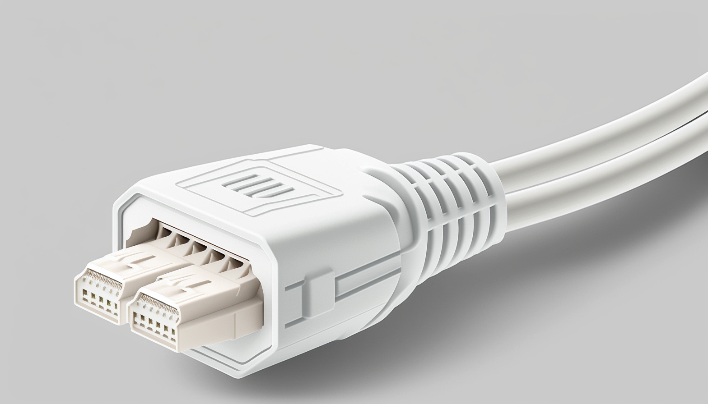
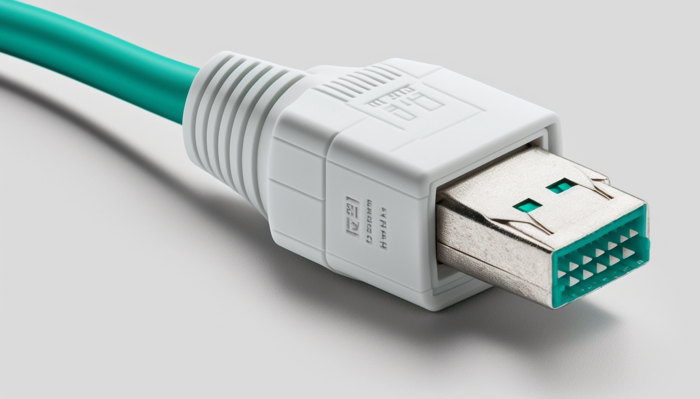

Elegant
Los componentes son diseñados para ser reusables y componibles. Puedes usar componentes dentro de otros componentes para construir UI más y más avanzada.

Aesthetic
Si escribes solo HTML en esta sección, el componente va a renderizar este HTML en cualquier página Astro donde sea importado o utilizado.

Glow
La valla de código está diseñada para garantizar que el código JavaScript que escribes adentro se encuentre “encapsulado”.
Beauty
Un componente de Astro se compone de dos partes principales: el script del componente y el maquetado del componente.